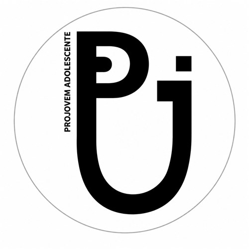
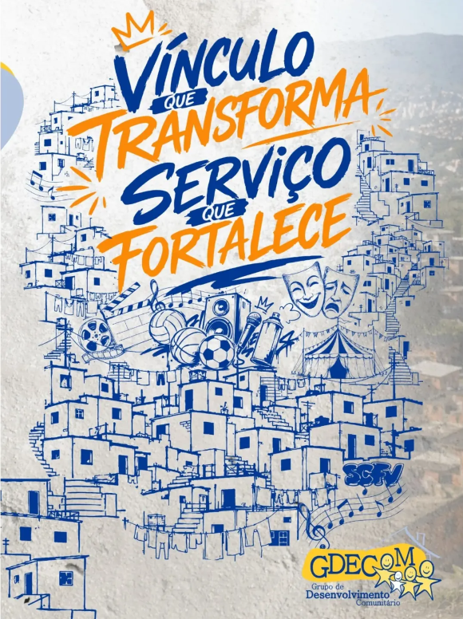
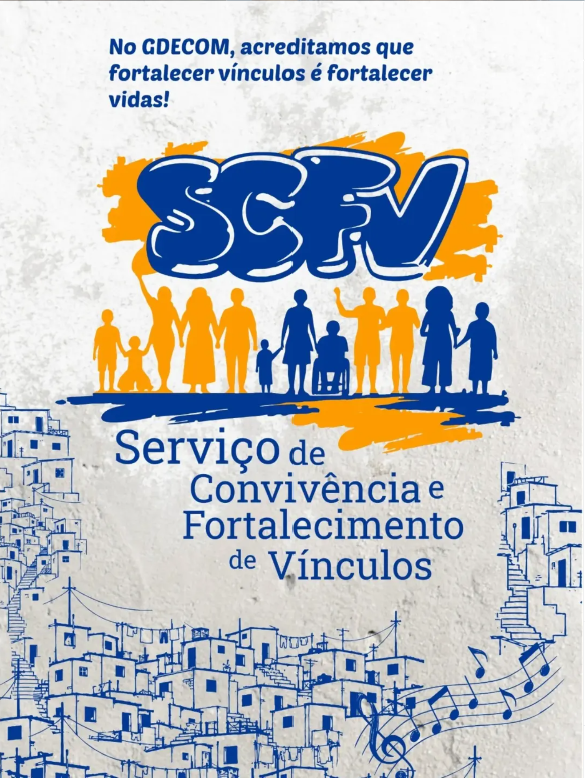
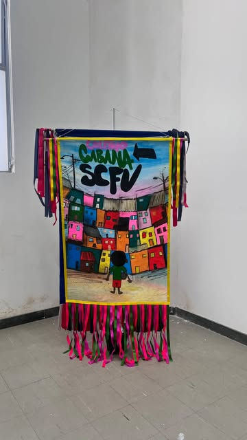
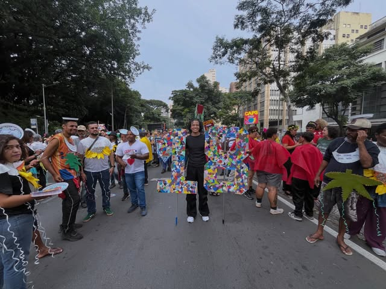
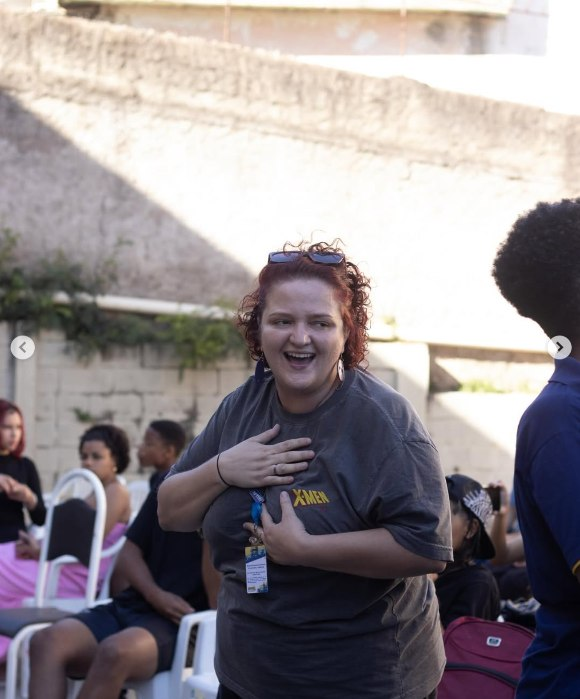

SCFV — Serviço de Convivência e Fortalecimento de Vínculos
No GDECOM, acreditamos que fortalecer vínculos é fortalecer vidas. O SCFV reúne grupos de convivência que trabalham o pertencimento, a autoestima e os laços entre pessoas, famílias e território.

Desenvolvido em parceria com a Prefeitura de Belo Horizonte, no âmbito do SUAS (Sistema Único de Assistência Social), o SCFV busca posicionar crianças, adolescentes e jovens como sujeitos de direitos e deveres, tornando-os protagonistas de sua realidade — esse é o ponto-chave do Serviço.
Hoje, a execução deste serviço no município de Belo Horizonte se faz em territórios de 22 CRAS (Centros de Referência da Assistência Social). Em 19 desses territórios, tanto a arte e cultura quanto as ações pedagógicas ficam sob responsabilidade direta do GDECOM.
- Desenvolvido em parceria com a Prefeitura de Belo Horizonte, no âmbito do SUAS;
- Fortalecimento de vínculos familiares e comunitários e ampliação das relações sociais;
- Acesso a direitos para jovens de 15 a 17 anos;
- Convivência, arte, brincadeira e escuta.


Um pouco do SCFV
Registros das atividades do SCFV. Clique em qualquer imagem para ampliar.



Quer saber mais sobre este projeto?
Fale com a nossa equipe e tire suas dúvidas sobre inscrição, turmas e parcerias.
Falar com o GDECOM Ver todos os projetos